Annual Energy Outlook 2016
Full Release Date: September 15, 2016 | Next Release Date: January 2017 | full report
Market Trends: Electricity demand
Growth in electricity use from 2015 to 2040 slows to 24% with Clean Power Plan (CPP) and to 27% with no CPP
Electricity demand growth (including retail sales and direct use) has slowed in every decade since the 1950s, from 9.8%/year from 1949–59 to 0.5%/year from 2000–2015. In the AEO2016 Reference case and No CPP case, electricity demand growth remains relatively slow, as rising demand for electric services is offset by efficiency gains from new appliance standards and investments in energy-efficient equipment. Total electricity demand grows by 24% (0.9%/year) from 2015–40 in the Reference case, which includes the effects of the Clean Power Plan (CPP). In the No CPP case, demand increases by 27% from 2015–40 (1.0%/year). U.S. electricity demand is affected primarily by population growth and economic activity. However, electricity demand growth has been significantly slower than gross domestic product (GDP) growth in recent years and continues to be slower in the projections (Figure MT-27).
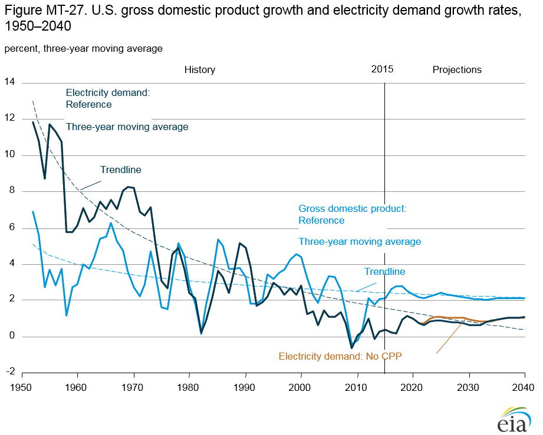
figure data
Electricity sales grow at a slower rate than electricity use, given the increasing role of self-generation in all end-use sectors. Total retail electricity sales increase by 20% (0.7%/year) from 2015–40 in the Reference case and by 23% (0.8%/year) in the No CPP case. Population shifts to warmer regions increase cooling requirements, which affects both residential and commercial electricity sales. In the residential sector, electricity sales grow by 9% and 11% from 2015–40 in the Reference case and No CPP case, respectively. The increasing energy efficiency of residential appliances and consumer electronics offsets some of the growth in electricity demand that would otherwise have occurred as a result of the increasing availability and sales of electronic devices. In the commercial sector, electricity demand grows by 21% in the Reference case and by 26% in the No CPP case from 2015–40, as demand for electrical devices and equipment continues to rise. In the industrial sector, electricity demand grows by 30% in the Reference case and by 32% in No CPP case from 2015–40, initially as a result of increasing sales in the primary metals, bulk chemical, and food industries, and later as a result of growth in the construction and metal-based durables industries. However, while demand increases for most industrial uses, total electricity use per unit of output declines in both the Reference case and No CPP case as energy efficiency increases.
Clean Power Plan accelerates shift from coal to natural gas and renewables
The Clean Power Plan (CPP) requires states to develop plans to reduce carbon dioxide (CO2) emissions from existing fossilfired electric generating units. The AEO2016 Reference case assumes that states will choose to cooperate with each other at the regional level [11], using a mass-based (cap-and-trade) program that allocates allowances to load-serving entities to reduce the potential impacts of higher rates on consumers.
If the CPP emerges intact from legal challenges, it is expected to reinforce the trend toward less carbon-intensive generation by accelerating the shift away from coal to natural gas and renewables, and toward increased energy efficiency. In the Reference case, coal use for electricity generation is overtaken by natural gas in 2024 and by renewables in 2028.
In the Reference case, higher electricity prices and the push for greater energy efficiency slows the 2015–30 growth rate of U.S. total electricity sales, from 1%/year from 2015–30 in the No CPP case to 0.8%/year in the Reference case. In addition, the higher cost associated with CO2 emissions under the CPP contributes to a 1.5% annual decline in electricity generated from coal, which drops from 1,355 billion kilowatthours (kWh) (a 33% share) in 2015 to 919 billion kWh (18%) in 2040. Retirements of coal-fired generators by 2030, increase from 60 gigawatts (GW) in the No CPP case to 92 GW in the Reference case, or about one-third of current capacity (Figure MT-28). Growth in generation from renewable energy sources also accelerates from 3.2%/year in the No CPP case to 3.8%/year in the Reference case, as total renewable generation increases from 546 billion kWh (13% of current generation) to 1,374 billion kWh (27% of 2040 generation in the Reference case). The average growth rate of nonhydropower renewable generation from 2015–40 increases from 4.5%/year in the No CPP case to 5.3%/year in the Reference case.
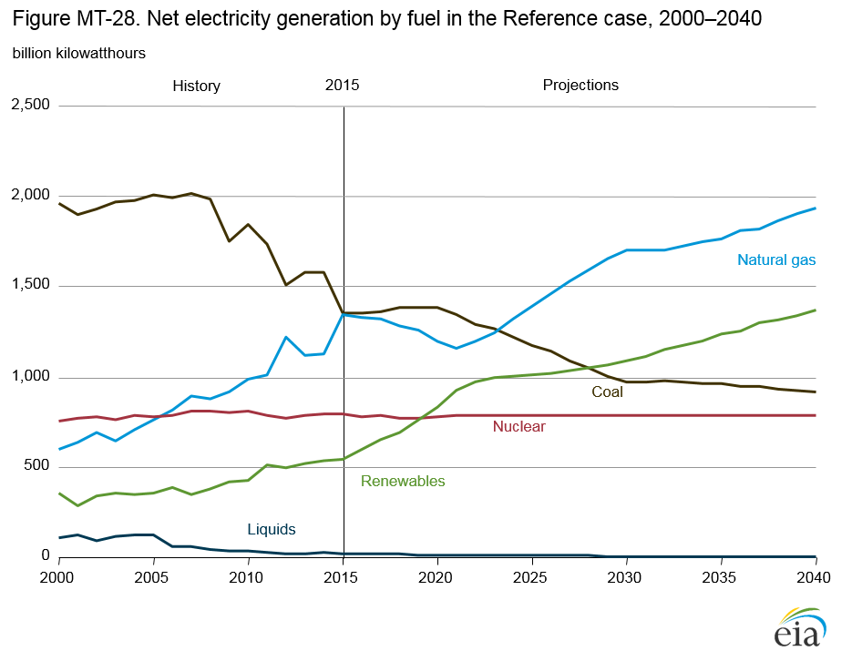
figure data
With no Clean Power Plan (CPP), coal-fired generation shows little change from 2015 level
The decline in natural gas prices since 2009 has threatened the cost competitiveness of existing U.S. coal-fired generators, resulting in a 25% reduction in coal-fired generation in 2015 from its level in the mid-2000s. In the No CPP case, natural gas-fired generation roughly equals coal generation in the United States on an annual basis in 2016. After declining somewhat from 2016-20 with strong renewable growth as a result of tax credits, the natural gas share increases steadily in the No CPP case, overtaking the coal share in 2029 as the predominant fuel for electricity generation. In 2040, the natural gas share of total generation is 34% in the No CPP case.
Recent policy and technology developments, including the extension of production and investment tax credits for renewable generation technologies enacted in December 2015, as well as reduced capital costs for solar photovoltaic systems, are further increasing the pressure on coal. In the No CPP case, renewables generation increases at 3.2%/year from 546 billion kilowatthours (kWh) (a 13% share) in 2015 to 1,204 billion kWh (a 23% share) in 2040 (Figure MT-29). Nonhydro renewables generation grows at the fastest rate through 2040, increasing at 4.5%/year, from 252 billion kWh in 2015 to 750 billion kWh in 2040. Over the same period, hydroelectric generation grows at 0.7%/year, from 245 billion kWh in 2015 to 294 billion kWh in 2040.
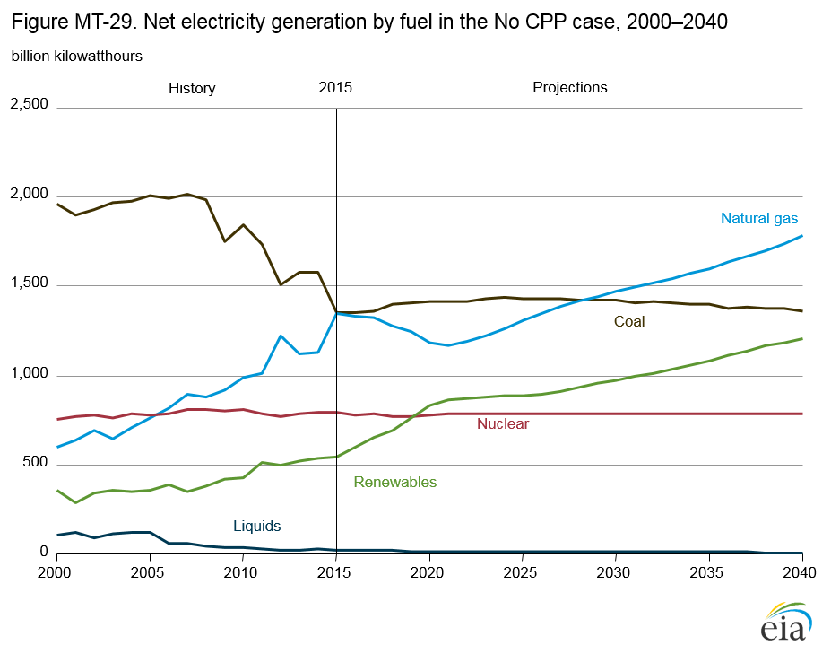
figure data
The coal share of total electricity generation falls from 48% in 2008 to 31% in 2029, when the natural gas share surpasses it, and then continues to decline, falling to a 26% share in 2040. Coal generation is essentially flat from 2015 to 2040 in the No CPP case. A large portion of the decline in coal generation is attributable to the retirement of coal generating capacity in the No CPP case. The No CPP case has 60 gigawatts of cumulative coal capacity retirements between 2016 and 2030. Nuclear generating capacity remains virtually unchanged over the projection in the No CPP case, as additions are more than offset by retirements. Total nuclear generation is flat at about 789 billion kWh, accounting for a 20% share in 2015 and a 15% share in 2040. Coal and nuclear generation, which together satisfied 70% of U.S. generation requirements as recently as 2005, fall to a 47% share of total generation in 2030 and a 42% share in 2040 in the No CPP case.
Renewables and natural gas lead capacity additions through 2040 in the Reference case
In the AEO2016 Reference case, two developments significantly
improve the prospects for renewable capacity: extension of
favorable federal tax treatment for renewable generators,
and continued dramatic reductions in the capital cost of solar
photovoltaic (PV) systems. In the Reference case, cumulative
additions to U.S. generating capacity from 2016–40 total 483
gigawatts (GW) for all technologies, including 302 GW of
renewable technology additions (63% of the total), both powersector
and end-use generators (Figure MT-30). Renewable
generation capacity additions consist primarily of wind (73
GW) and solar (221 GW) technologies, including 77 GW of
solar PV installations in the end-use sectors.
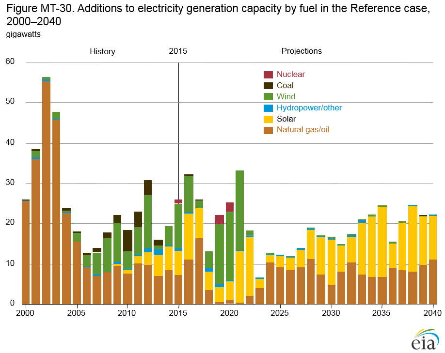
figure data
The increase in renewable capacity additions helps offset the retirement of 100 GW of coal-fired capacity as a result of environmental legislation, including implementation of the Clean Power Plan. Relatively low natural gas prices from 2016–40 also lead to a significant increase in natural gas-fired capacity, with 175 GW of gas-fired capacity additions accounting for 36% of the total increase. Total renewable capacity additions average 16 GW/year through 2024. From 2025–40, renewable capacity additions slow to 10 GW/year, as electricity demand growth slows. Virtually all capacity additions after 2025 in the Reference case are solar PV and natural gas, which account for 53% and 43% of total additions, respectively, over the 2025–40 period. Among fossil fuel generating technologies, natural gasfired combined-cycle plants remain the least-cost option for new capacity additions, and they generally are more efficient to operate than existing steam plants fueled with natural gas, oil, or coal.
In the No CPP case, most new electricity generation capacity uses natural gas and renewables
In the No CPP case, additions to electricity generation capacity—including those in the end-use sectors—total 392 gigawatts (GW) from 2016–40 (Figure MT-31). Capacity additions in the near term replace retiring coal-fired plants, which are the result of low natural gas prices and implementation of the Mercury Air Toxic Standards. Coal-fired capacity declines from 284 GW in 2015 to 215 GW in 2040, with much of that capacity retired by 2025. A total of 60 GW of coal-fired capacity is retired from 2016–25 in the No CPP case, including both announced retirements and those projected on the basis of market factors. Total capacity additions average 16 GW/year from 2016–40, with 97 GW of renewable capacity additions from 2016–25 and 44 GW of natural gas additions over the same period.
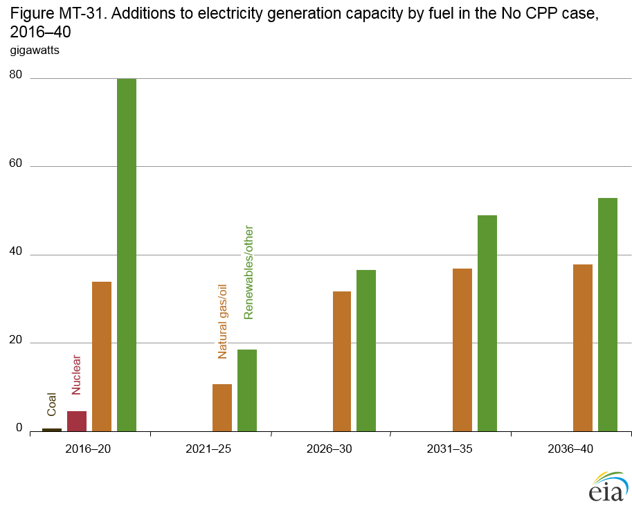
figure data
Renewable additions in the No CPP case benefit from the extension of the federal tax credit in the near term and from declining costs in the long term. Renewable additions total 236 GW from 2016–40, primarily solar (178 GW) and wind (52 GW). The solar capacity additions include 74 GW of rooftop and other distributed solar generation installations in the enduse sectors. Most of the wind capacity is added before 2025 to take advantage of the production tax credit, which is available only to projects beginning substantive development before 2020. Solar capacity is added steadily through 2040, as it becomes more cost-competitive as a result of declining capital cost and the investment tax credit. The tax credit phases down from 30% in 2016 to 10% in 2022 and then remains at that level for utility and commercially operated solar projects but ends for residential solar projects.
In the No CPP case, natural gas accounts for 38% (150 GW) of cumulative capacity additions from 2016–40. The relatively steady growth of natural gas capacity, which helps to maintainbaseload generation and provide grid reliability services, also results from continued low natural gas prices.
Electricity prices rise and fall with natural gas availability and prices
In the No CPP case, additions to electricity generation capacity—including those in the end-use sectors—total 392 gigawatts (GW) from 2016–40 (Figure MT-31). Capacity additions in the near term replace retiring coal-fired plants, which are the result of low natural gas prices and implementation of the Mercury Air Toxic Standards. Coal-fired capacity declines from 284 GW in 2015 to 215 GW in 2040, with much of that capacity retired by 2025. A total of 60 GW of coal-fired capacity is retired from 2016–25 in the No CPP case, including both announced retirements and those projected on the basis of market factors. Total capacity additions average 16 GW/year from 2016–40, with 97 GW of renewable capacity additions from 2016–25 and 44 GW of natural gas additions over the same period.
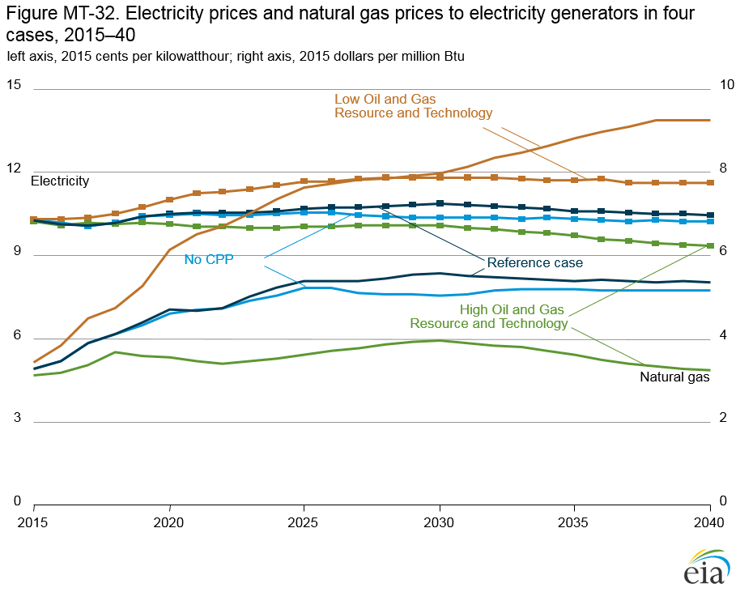
figure data
Renewable additions in the No CPP case benefit from the extension of the federal tax credit in the near term and from declining costs in the long term. Renewable additions total 236 GW from 2016–40, primarily solar (178 GW) and wind (52 GW). The solar capacity additions include 74 GW of rooftop and other distributed solar generation installations in the enduse sectors. Most of the wind capacity is added before 2025 to take advantage of the production tax credit, which is available only to projects beginning substantive development before 2020. Solar capacity is added steadily through 2040, as it becomes more cost-competitive as a result of declining capital cost and the investment tax credit. The tax credit phases down from 30% in 2016 to 10% in 2022 and then remains at that level for utility and commercially operated solar projects but ends for residential solar projects.
In the No CPP case, natural gas accounts for 38% (150 GW) of cumulative capacity additions from 2016–40. The relatively steady growth of natural gas capacity, which helps to maintain baseload generation and provide grid reliability services, also results from continued low natural gas prices.
Electricity generation mix responds significantly to natural gas prices
Recent low natural gas prices have led to a shift from coal to
natural gas for electricity generation. In addition, favorable
federal and state policies have supported increases in renewable
capacity. The future generation mix will depend to significant
extent on future natural gas prices, as existing natural gas plants
compete with coal for dispatch decisions in the short term, and
natural gas combined-cycle capacity competes with wind and
solar capacity in the longer term. The AEO2016 Low and High
Oil and Gas Resource and Technology cases provide a range of
potential future natural gas price paths that could affect the mix
of fuels used for electricity generation. In the High Oil and Gas
Resource and Technology case, delivered natural gas prices
remain below $4/million British thermal units (Btu) through
2040. In the Low Oil and Gas Resource and Technology case,
delivered natural gas prices rise steadily, to $8/million Btu in
2030 and more than $9/million Btu in 2040.
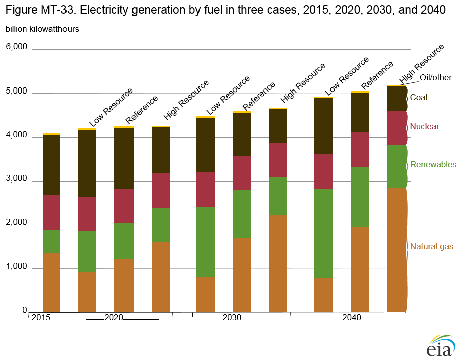
figure data
Lower natural gas prices in the High Resource and Technology case lead to a 48% natural gas share of total generation in 2030—compared with 37% in the Reference case—and a 55% share in 2040 (Figure MT-33). An additional 39 gigawatts of coal-fired capacity is retired by 2040, and the coal share of total generation falls from 33% in 2015 to 17% in 2030 and to 11% in 2040. Renewable capacity additions in the same case are less than half of those in the Reference case, and the overall renewable share of total generation is 18% in 2030 and 19% in 2040, compared with 24% and 27%, respectively, in the Reference case.
In the Low Oil and Gas Resource and Technology case, higher natural gas prices reduce the natural gas share of total electricity generation from 33% in 2015 to 18% in 2030 and to 16% in 2040. Fewer coal plants are retired, allowing for higher levels of coal-fired generation than in the Reference case. More new renewable generation reduces the share of more expensive natural gas-fired generation needed to meet the growth in demand for electricity.
Resource availability has more effect than the Clean Power Plan on natural gas-fired generation
In the No CPP case, additions to electricity generation capacity—including those in the end-use sectors—total 392 gigawatts (GW) from 2016–40 (Figure MT-31). Capacity additions in the near term replace retiring coal-fired plants, which are the result of low natural gas prices and implementation of the Mercury Air Toxic Standards. Coal-fired capacity declines from 284 GW in 2015 to 215 GW in 2040, with much of that capacity retired by 2025. A total of 60 GW of coal-fired capacity is retired from 2016–25 in the No CPP case, including both announced retirements and those projected on the basis of market factors. Total capacity additions average 16 GW/year from 2016–40, with 97 GW of renewable capacity additions from 2016–25 and 44 GW of natural gas additions over the same period.
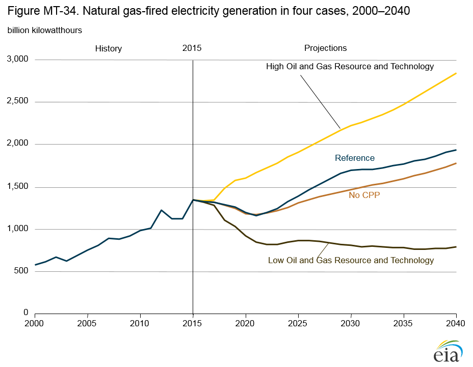
figure data
Renewable additions in the No CPP case benefit from the extension of the federal tax credit in the near term and from declining costs in the long term. Renewable additions total 236 GW from 2016–40, primarily solar (178 GW) and wind (52 GW). The solar capacity additions include 74 GW of rooftop and other distributed solar generation installations in the enduse sectors. Most of the wind capacity is added before 2025 to take advantage of the production tax credit, which is available only to projects beginning substantive development before 2020. Solar capacity is added steadily through 2040, as it becomes more cost-competitive as a result of declining capital cost and the investment tax credit. The tax credit phases down from 30% in 2016 to 10% in 2022 and then remains at that level for utility and commercially operated solar projects but ends for residential solar projects.
In the No CPP case, natural gas accounts for 38% (150 GW) of cumulative capacity additions from 2016–40. The relatively steady growth of natural gas capacity, which helps to maintain baseload generation and provide grid reliability services, also results from continued low natural gas prices.
Nuclear power generation faces competition from natural gas and renewables
Decisions to build new nuclear capacity, uprate existing reactors, or extend their operating lifetimes depend on the cost-competitiveness of nuclear generation in electric power markets. Independent power producers [12] have faced financial losses in recent years on their nuclear capacity as a result of competition from lower-cost energy sources—including natural gas and wind—and declining electricity demand and reduced capacity payments in some regions [13].
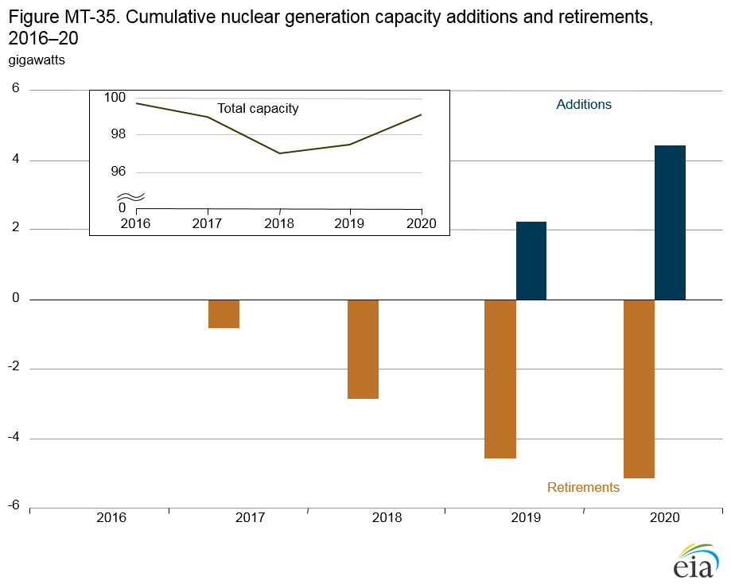
figure data
Low natural gas prices reduce the competiveness of newly built nuclear capacity relative to natural gas-fired combined-cycle plants, and they reduce wholesale market prices for electricity from existing nuclear power plants. As a result, no uprates or new builds of nuclear capacity beyond those already underway occur in any of the AEO2016 cases.
The Reference case incorporates 2,139 megawatts (MW) of planned and announced nuclear plant retirements (Figure MT-35), including FitzPatrick (852 MW) in 2016, and Pilgrim (678 MW) and Oyster Creek (610 MW) in 2019. The Reference case also assumes early retirement of 3 gigawatts (GW) of nuclear capacity, modeled as derates in competitive regions, based on an assessment of market uncertainties. These retirements represent a total reduction in nuclear capacity of 5.1 GW from the existing nuclear fleet. Market uncertainties and regulatory issues have led to recent announcements of reactor retirements that are not reflected in the Reference case: Clinton (1,065 MW), Quad Cities Units 1 and 2 (1,819 MW), Fort Calhoun (479 MW), and Diablo Canyon Units 1 and 2 (2,240 MW). These reecent announcements represent an additional incremental reduction of 2.6 gigawatts of retirements not reflected in the Reference case. The Reference case addresses near-term accelerated nuclear retirements but assumes that subsequent license renewals will allow for long-term operation up to 80 years. Future AEOs will discuss the ability of nuclear power stations to achieve long-term operation beyond 60 years.
Renewable capacity additions are dominated by solar photovoltaics
In the AEO2016 Reference case, total wind and solar electricity generation capacity grows by 5%/year from 2016–40, adding more than 294 gigawatts (GW) to provide 80% of total renewables capacity in 2040 (Figure MT-36). In the No CPP case, which assumes that the Clean Power Plan (CPP) is not implemented, wind and solar capacity together increase by more than 4%/year, adding almost 230 GW of generating capacity over the 2016–40 period. Wind and solar capacity increases by 10%/year from 2016–20 and then slows to 3%/ year from 2021–40 in both the Reference and No CPP cases.
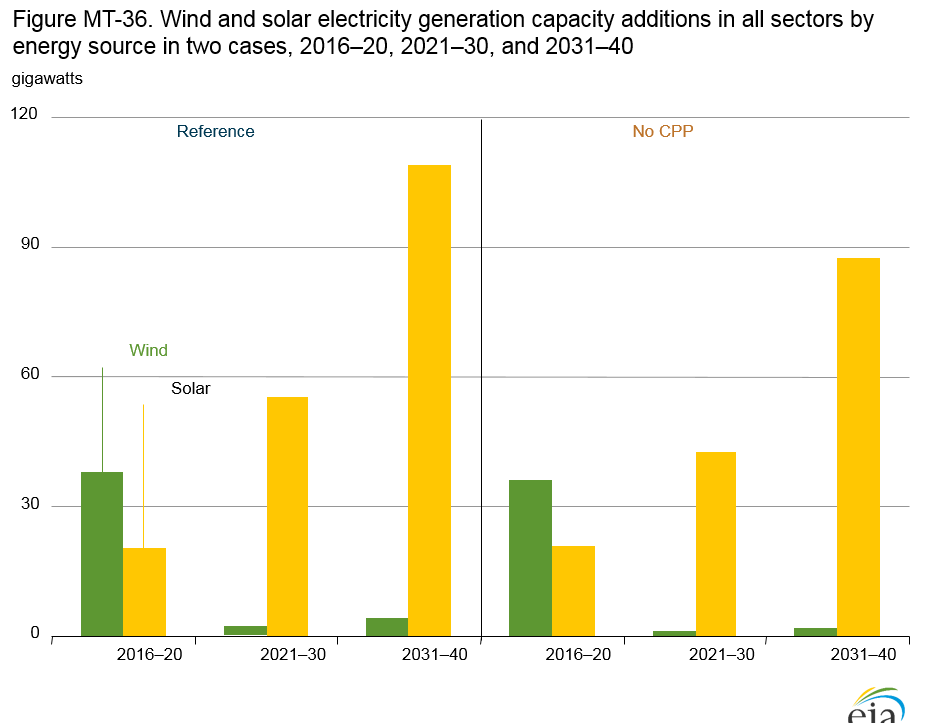
figure data
Solar power provides the largest increase in renewable capacity, from 25 GW in 2015 to more than 246 GW in 2040 in the Reference case and more than 202 GW in the No CPP case. The increases in wind capacity are much smaller, at 73 GW in the Reference case and less than 52 GW in the No CPP case from 2016–40. Solar installations have benefitted from significant reductions in technology costs in recent years, while wind capacity is hampered by the need to access wind sites farther from existing transmission lines or with less favorable development characteristics. Wind capacity additions are particularly slow between 2030–40, at slightly more than 4 GW in the Reference case and 2 GW in the No CPP case. With slow growth in wind capacity additions and continued fast growth in solar additions, solar capacity surpasses wind capacity in 2032 in the Reference case and in 2033 in the No CPP case.
Renewable capacity growth is supported by a variety of federal
and state policies. The recent five-year extension of production
tax credits and investment tax credits supports the growth of
new renewable capacity through 2022. The CPP policy takes
effect in 2022, providing additional incentives for renewable
capacity additions to meet CO2 emissions targets from 2022–29. Although the targets remain flat after the interim period,
additions of renewable capacity continue in order to meet CO2
emissions targets while satisfying demand for new generation.
Renewable electricity generation sensitive to government policies and natural gas prices
Total renewable electricity generation increases in the Reference case by more than 150%, from 546 billion kilowatthours (kWh) in 2015 to 1,374 billion kWh in 2040 (Figure MT-37). The total varies in the alternative cases with different price, resource, and policy assumptions, ranging from a 76% increase in the High Oil and Gas Resource and Technology case to a 271% increase in the Low Oil and Gas Resource and Technology case. Generation from wind and solar resources represents the largest share of the increase in renewable generation. In the Reference case, solar generation increases by an average of 11%/year, from 38 billion kWh in 2015 to 477 billion kWh in 2040, and wind generation increases by an average of 4%/year, from 190 billion kWh in 2015 to 473 billion kWh in 2040. Solar power provides about 35% of total renewable electricity generation in 2040 in the Reference case, up from 7% in 2015.
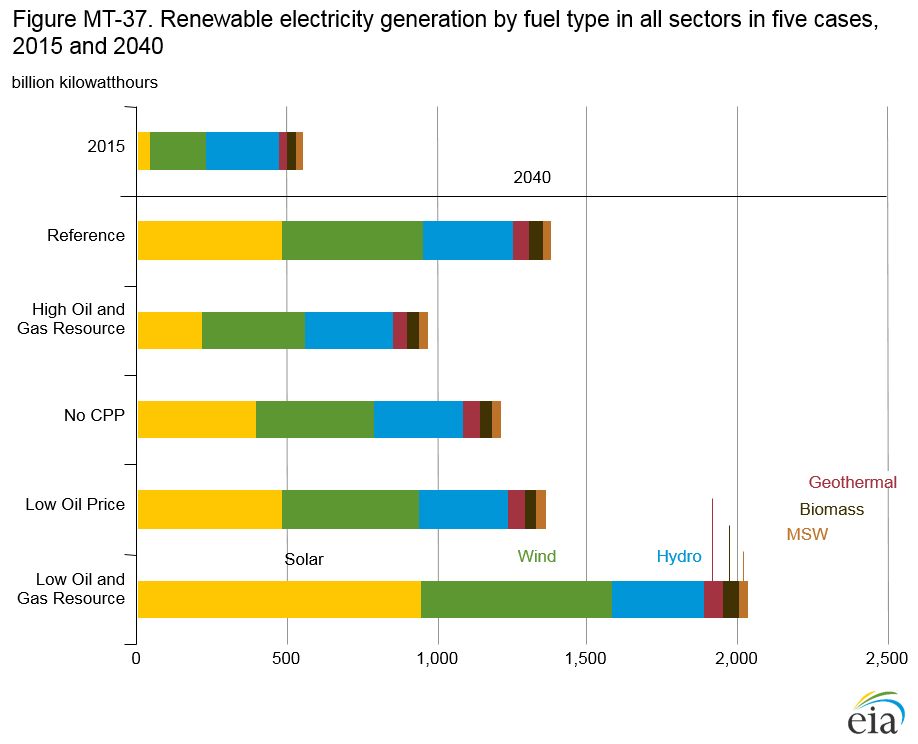
figure data
In the Low Oil and Gas Resource and Technology case, which has the highest natural gas prices among all the AEO2016 cases, renewable generation increases to 2,030 billion kWh in 2040, with approximately 46% of the total coming from solar generation, 31% from wind, and 15% from hydropower. Because natural gas often is the marginal fuel in determining wholesale electricity prices, higher natural gas prices tend to make renewable generation more competitive. Solar generation, which is available during the day to meet peak demand and can displace natural gas-fired generation, serves 19% of total load in 2040.
In the High Oil and Gas Resource and Technology case, low natural gas prices reduce growth in total renewable generation, which increases to only 961 billion kWh in 2040. Lower natural gas prices increase the cost-effectiveness of natural gas-fired power plants and make renewable generation less competitive.
Southeast region leads growth in nonhydropower renewable electricity generation
In the AEO2016 Reference case and the No CPP case, nonhydropower renewable generation increases from 2020 to 2040 in all the electricity regions. (For a map of regions, see Appendix F.) Regional growth in renewable generation is determined by four factors: implementation of the Clean Power Plan (CPP), state renewable portfolio standards (RPS), availability of renewable energy resources, and cost competition with fossil fuel technologies. Factors such as electricity demand growth, non-RPS policies (such as net metering), and electricity prices also affect regional growth rates.
From 2020–40, the Southeast region experiences the largest
increases in nonhydropower renewable electricity generation
both in the Reference case (360%) and in the No CPP case
(206%), with growth led by utility-scale solar and wind
capacity additions in the Tennessee Valley and in Florida
(Figure MT-38). In the Reference case, which includes the
CPP, nonhydropower renewable generation in the Southeast in
2040 is the largest among all regions and is 48%, or 70 billion
kilowatthours (kWh), greater than in the No CPP case. In the
California and Southwest/Rockies regions, generation from
nonhydropower renewables doubles from 2020–40 in both the
Reference and No CPP cases, partly as a result of mandatory
RPS policies. Solar power leads the growth in nonhydropower
renewable generation in California, making up more than
65% of the growth from 2020–40 in both the Reference and No CPP cases. Solar makes up more than 80% of the growth
in the Southwest/Rockies region in both cases. In Texas,
nonhydropower renewable electricity generation in 2040 in
the Reference case is approximately 165% higher than in 2020
(an increase of more than 80 billion kWh). The growth over the
same period in the No CPP case is 80% (an increase of nearly
39 billion kWh).
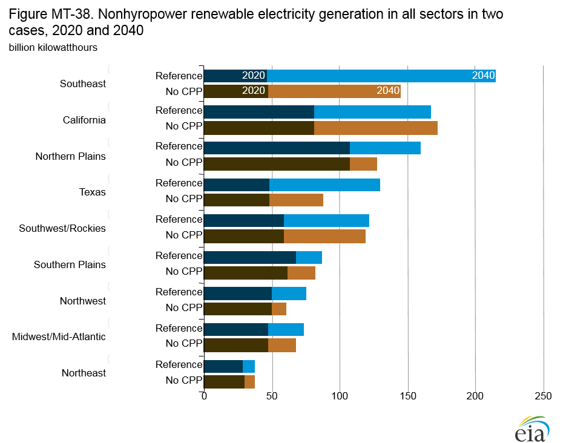
figure data
Nonhydropower renewable generation growth is generally higher with the carbon emission restrictions of the CPP in the Reference case than without the restrictions. However, both the growth and the resulting generation mix vary substantially among regions, depending on the cost and availability of resources and state policies.
Levelized generation and avoided costs influence the economics of new technologies
Factors that influence technology choices for new generating capacity are difficult to compare. Different technologies can have vastly different costs (capital, fuel, maintenance, financing), utilization rates, fuel resources, and value to the grid. The levelized cost of electricity (LCOE) is often used to compare costs among technologies with similar operating characteristics; the levelized avoided cost of electricity (LACE) is used to compare value across technologies with different duty cycles (Figure MT-39). LCOE—which represents the costs of building and operating a plant per kilowatthour of output over an assumed financial life and activity level (e.g., baseload, peaking, seasonal)—can vary significantly across regions and over time. Because solar photovoltaic (PV) and wind generation have no fuel costs and relatively small variable operation and maintenance costs, their LCOE is determined mostly by capital and financing costs. LACE, which represents the perkilowatthour value of generation to the electric grid, reflects the cost of the electricity displaced by the new technology. A technology is generally considered economically competitive when its LACE exceeds its LCOE.
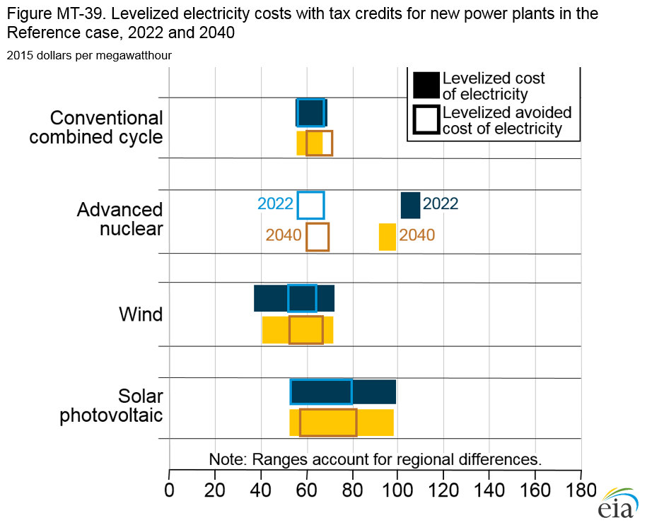
figure data
In comparisons of two new plants using different technologies,
LCOE may not account for differences in the grid services
each is providing. For example, nuclear plants and natural gas
combined-cycle plants both provide baseload services to the
grid and thus have similar LACE values, even if their LCOE
values differ. By 2040, the LACE range for most technologies
is expected to shift upward, indicating the increasing value of
new generation to the grid as demand for new sources grows.
Wind plants have increased generation during the night (when
the demand for and value of electricity typically are low)
and thus provide a limited contribution to system reliability
reserves. Solar PV plants produce most of their energy during
the middle of the day, when higher demand increases the value
of electricity. Consequently, in 2040, the upper bound of LACE
for solar PV generation, at 55.7–80.3 dollars/megawatthour
(MWh), is higher than the upper bound of LACE for wind
(50.6–65.3 dollars/MWh). In 2022, the lower bound of LCOE
without tax credits for solar PV generation (not shown) is
generally much higher than the lower bound for generation with
tax credits, although available tax credits close the gap in some
regions. In 2040, the LCOE and LACE ranges for solar PV are
overlapping, even without the 10% investment tax credit that,
under current law, would be available for solar PV in 2040.
With Clean Power Plan, power plant coal use and sulfur dioxide emissions decline in the Reference case
Sulfur dioxide (SO2) emissions from electricity generation have declined with reduced coal use. In 2016, SO2 emissions are expected to fall by nearly two-thirds from 2015 levels with the lapse of extended deadlines for compliance with the Mercury and Air Toxics Standards (MATS) for almost all generating units in April 2016. The MATS rule requires that any coal-fired power plant in operation after the deadline must be retrofitted to control mercury and acid gases with either dry sorbent injection or flue-gas desulfurization (scrubbing) equipment, which also removes 70%–90% of SO2 emissions. Although the Cross-State Air Pollution Rule (CSAPR) is still in effect and covers SO2 emissions from these units, the more stringent reduction requirements under MATS render CSAPR irrelevant.
For some generators, the prospect of meeting MATS compliance requirements is uneconomical, based on cost recovery with likely lower operating rates for retrofitted coal units in a market driven by lower natural gas prices. Even in the No CPP case, a cumulative total of 40 gigawatts (GW) of coal-fired capacity is retired by 2016 and 57 GW by 2020. Utility sector coal use increases slightly from 2016–20 with increased utilization, but SO2 emissions are largely unchanged as a result of high levels of SO2 removal with newly installed retrofits and remain at about the same level through 2040.
In the AEO2016 Reference case, which includes the requirement for power plants in each state to lower CO2 emissions beginning in 2022, retirements continue to a cumulative total of 92 GW in 2030 and to nearly 100 GW in 2040. As a result, utility coal consumption in the Reference Case falls by approximately 35%, from 14.3 quadrillion Btu in 2020 to 9.4 quadrillion Btu in 2040 (Figure MT-40). SO2 emissions also fall by about one-third, from 1.2 million tons in 2020 to 0.8 million tons in 2040.
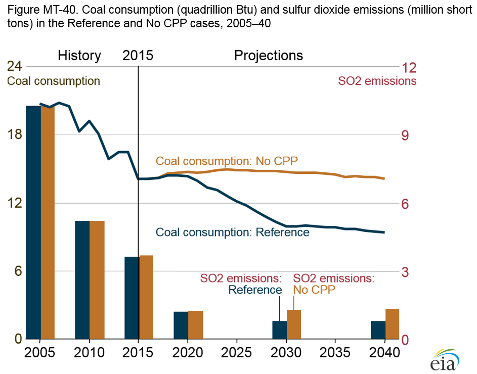
figure data
Electric power sector accounts for 35% of U.S. natural gas consumption in 2040
Total U.S. natural gas consumption grows from 27.5 trillion cubic feet (Tcf) in 2015 to 34.4 Tcf in 2040 in the AEO2016 Reference case (Figure MT-41). Consumption of natural gas for electric power generation increases by 2.4 Tcf, accounting for 34% of the total increase. Natural gas consumption was at a record high in 2015, which resulted primarily from low natural gas prices and the retirement of coal-fired capacity. In the Reference case, natural gas use for electricity generation declines from 2015–21 as a result of rising natural gas prices and increasing use of renewable fuels. With implementation of the Clean Power Plan starting in 2022, as well as the reduction or phasing out of some renewable tax credits, and relatively low natural gas prices, natural gas use for electric power generation grows by an average of approximately 4%/year from 2021–30 and continues to increase at a more modest pace of just under 1%/year from 2031–40.
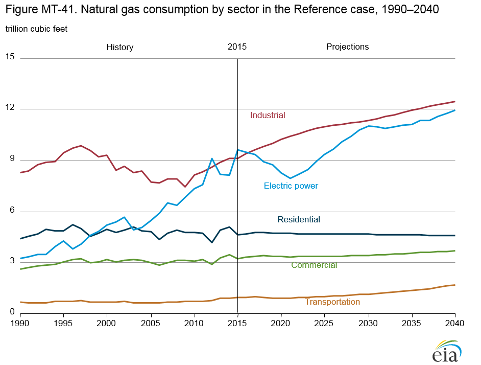
figure data
Natural gas consumption in the industrial sector, which includes the use of natural gas for lease and plant fuel and liquefaction of natural gas for export, increases by 3.4 Tcf from 2015–40, an average increase of 1.3%/year. Energy-intensive industries and those that use natural gas as a feedstock, such as bulk chemicals, benefit from relatively low natural gas prices throughout the projection. Increasing use of lease and plant fuel, which is correlated with natural gas production, and fuel used for the production of liquefied natural gas for export also contribute to the growth of natural gas consumption in the industrial sector.
Natural gas use in vehicles currently accounts for only a small portion of U.S. total natural gas use, but it grows rapidly from 64 billion cubic feet (Bcf) in 2015 to 658 Bcf in 2040. Heavy-duty vehicles and freight rail account for 33% of the natural gas used in the transportation sector in 2040 in the Reference case, and pipeline compressor stations account for most of the remainder.
In the residential sector, natural gas use for space heating declines, partially as a result of improvements in energy efficiency and population shifts to warmer regions. In the commercial sector, where growth in commercial floor space more than offsets improvements in energy efficiency, natural gas use rises gradually over the projection period.
Endnotes
- The NEMS Electricity Market Model regions are designed to replicate the power trading patterns in each market (see map in Appendix F).
- Independent power producers are also known as nongovernment utilities and merchant generators. In 1978, the U.S. Congress passed the U.S. Public Utility Regulatory Policies Act, which established a class of nonutility generators called Qualifying Facilities permitted to produce power for resale.
- W. Barber, “More nuclear power plant retirements forecast,” Electric Light and Power (September 28, 2015), http://www.elp.com/articles/2015/09/more-nuclear-power-plantretirements-forecast.html.
In This Section
- Growth in electricity use from 2015 to 2040 slows to 24% with Clean Power Plan (CPP) and to 27% with no CPP
- Clean Power Plan accelerates shift from coal to natural gas and renewables
- With no Clean Power Plan (CPP), coal-fired generation shows little change from 2015 level
- Renewables and natural gas lead capacity additions through 2040 in the Reference case
- In the No CPP case, most new electricity generation capacity uses natural gas and renewables
- Electricity prices rise and fall with natural gas availability and prices
- Electricity generation mix responds significantly to natural gas prices
- Resource availability has more effect than the Clean Power Plan on natural gas-fired generation
- Nuclear power generation faces competition from natural gas and renewables
- Renewable capacity additions are dominated by solar photovoltaics
- Renewable electricity generation sensitive to government policies and natural gas prices
- Southeast region leads growth in nonhydropower renewable electricity generation
- Levelized generation and avoided costs influence the economics of new technologies
- With Clean Power Plan, power plant coal use and sulfur dioxide emissions decline in the Reference case
- Electric power sector accounts for 35% of U.S. natural gas consumption in 2040
Interactive Table Viewer ›
Provides custom data views of all AEO2016 cases. All available cases can be charted and the data for them downloaded.